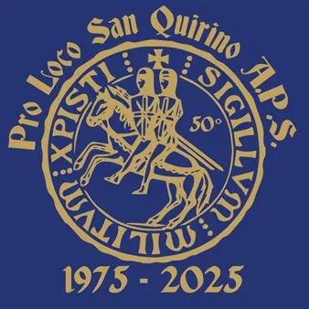

da mer 14 ott a dom 18 ott
Sagra della Madonna della Salute
Torna uno degli appuntamenti più attesi dell'autunno! Buona cucina, musica dal vivo e tanto divertimento per tutti! Ogni sera una specialità diversa e chioschi fornitissimi: Mercoledì 14 • Ore 19:00 - Apertura chioschi • Specialità della serata: MENU SELVAGGINA Giovedì 15 • Ore…
 Indicazioni
Indicazioni
- Costi e prenotazioni
- Costo non indicato · Prenotazione non indicata
- Programma
- Programma da verificare. Apri la fonte ufficiale per orari e possibili aggiornamenti.
- In caso di maltempo
- Nessuna indicazione specifica pubblicata.
- Note
- Acquisito automaticamente dalla fonte.
L’EVENTO
Descrizione completa
Torna uno degli appuntamenti più attesi dell'autunno! Buona cucina, musica dal vivo e tanto divertimento per tutti!
Ogni sera una specialità diversa e chioschi fornitissimi:
Mercoledì 14
• Ore 19:00 - Apertura chioschi
• Specialità della serata: MENU SELVAGGINA
Giovedì 15
• Ore 20:30 - Esibizione di ballo a cura di Mil Pasos ASD
• Specialità della serata: SPECIALITÀ PESCE
Venerdì 16 - SERATA DEI COSCRITTI
• Ore 22:00 - Dj Set e Serata dei Coscretti (Prenotazioni al 333 240 0903)
• Specialità della serata: RIBS BARBECUE, HAMBURGER E PULLED PORK ARTIGIANALI
Sabato 17
• Ore 18:00 - Aperitivo al Chioscritto!
• Ore 20:00 - Penelope e i Diaboliki Toupe in concerto
• Ore 22:30 - Special Guest: Mylius Johnson & Luca
• Specialità della serata: SPIEDO ALLA BRACE
Domenica 18
• Ore 10:30 - Santa Messa cantata dalla Corale Quirita
• Ore 14:30 - Canto del Vespro e solenne Processione col simulacro della Madonna della Salute (portato dai coscritti del 2008 con la Filarmonica di Sesto al Reghena)
• Ore 16:00 - Tradizionale Cuccagna dei Coscritti del 2008
• Ore 17:00 - Aperitivo al Brolo con Marcos Deejay
• Ore 18:30 - Apertura cucina e concerto dal vivo degli ABSOLUTE 5
• Ore 22:30 - Spettacolo Pirotecnico
• Specialità della giornata: GRIGLIATA MISTA
Da non perdere:
• Luna park
• Mostra fotografica dedicata alle storiche Cuccagne.
• Pesca di Beneficenza presso l'Ex Municipio in Piazza Roma (Sabato dalle 10:00 e Domenica tutto il giorno).
• Rosario in Chiesa per tutta la settimana alle ore 18:30.
IL PROGRAMMA
Programma e orari
Appuntamenti raccolti dalle fonti elencate. Dove manca un orario, non è ancora disponibile in questa scheda.
Programma pubblicato
- Dal 2026-10-14 al 2026-10-18
INFORMAZIONI UTILI
Prima di partire
- Controllare la fonte prima di partire.
ORGANIZZAZIONE